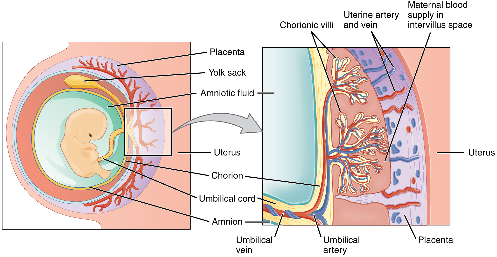
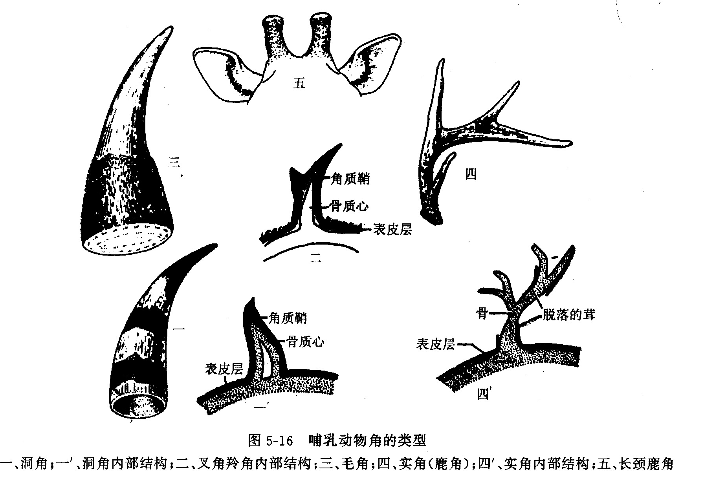
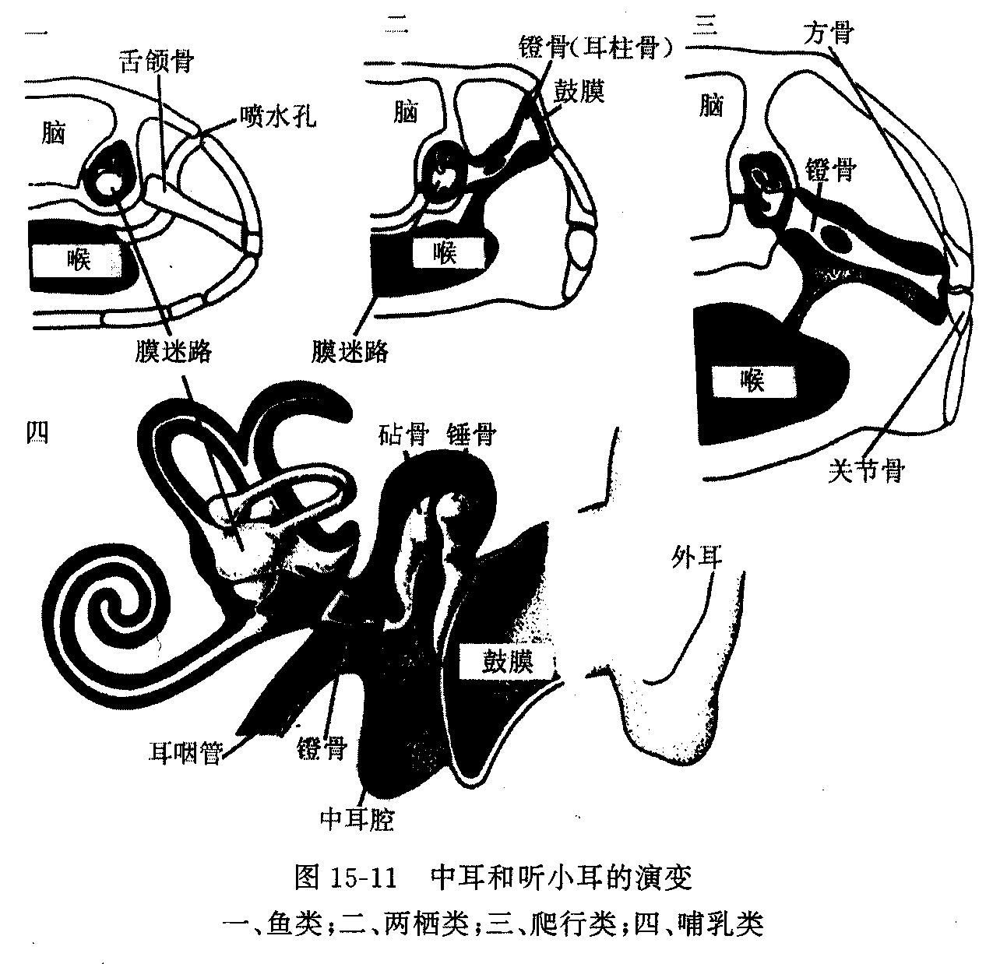
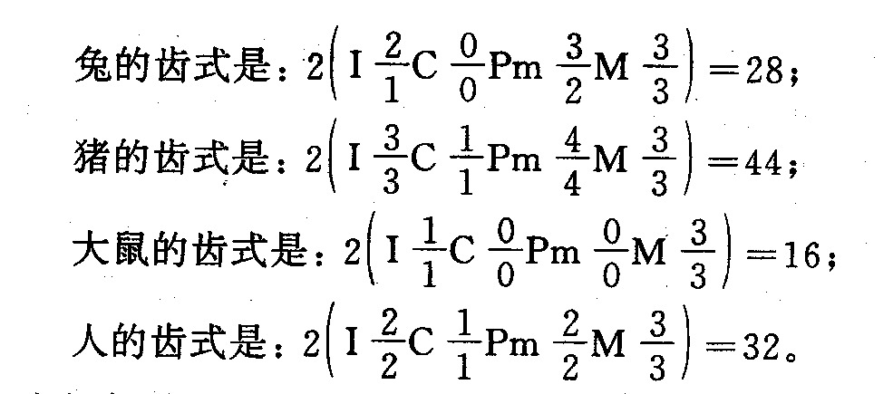
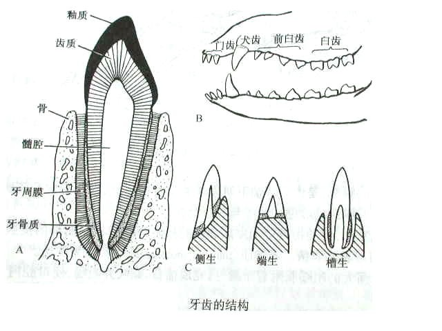
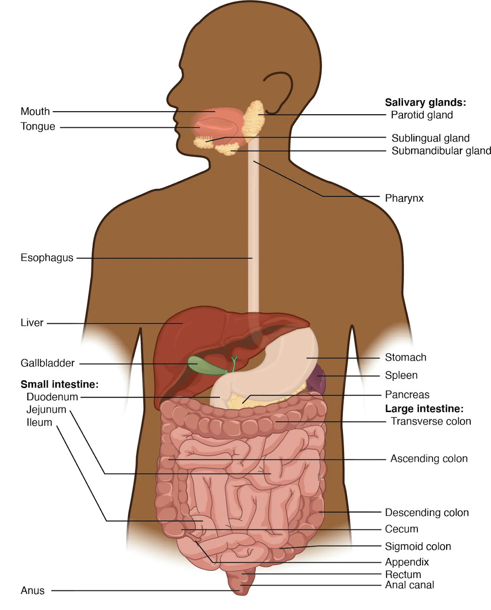
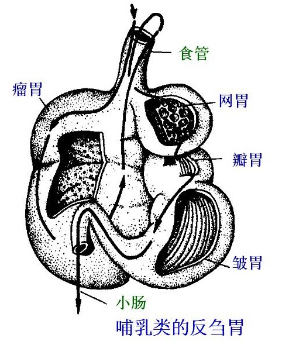

一、哺乳纲的主要特征
哺乳动物是最高等的脊椎动物。其进步而完善的特征集中体现在：胎生和哺乳、体表被毛、皮肤腺丰富、骨骼高度简化灵活、槽生异型再生齿、完全双循环、恒温高代谢、具有膈肌等。这些特征使哺乳类在生存竞争中站在较高起点，后代成活率大为提高。
（一）胎生和哺乳
1. 胎生 除单孔类为卵生外，受精卵卵裂形成桑葚胚后进入子宫并植入子宫内壁继续发育。胚胎的绒毛膜、尿囊与母体子宫内膜结合共同形成胎盘（又称尿囊胎盘或真胎盘）。这种生育方式能大大促进受精卵的发育、提高后代成活率。
有袋类的胎盘并非真正的胎盘，而是卵黄囊胎盘（由卵黄囊与母体子宫壁共同形成），幼仔发育不完全即产出，之后在母体腹部育儿袋中含着乳头继续发育，故称为假胎生。

2. 哺乳 所有哺乳动物母兽均以乳汁哺育幼崽，不仅提高了幼崽的营养和成活率，同时使幼崽得到母兽保护，并为早期学习、主动适应环境创造条件。
母兽具乳腺和乳头，乳头个数通常与一胎所产胎儿数相当。乳腺是高度特化的汗腺（由汗腺特化而来，是哺乳类特有）。卵生的原兽亚纲动物具乳腺但无乳头（乳汁直接渗出被幼崽舔食）。
（二）毛及其他皮肤衍生物
哺乳类皮肤中表皮角质层发达，真皮具极强韧性。皮肤衍生物在保护、体温调节、感受刺激、分泌和排泄等方面起重要作用。
1. 毛
毛为哺乳动物所特有，可分为三类：
- 针毛——保护作用
- 绒毛——保温作用
- 触毛——触觉作用
毛由表皮角质化形成，与角质鳞片及羽毛为同源结构。毛有季节性的更换（换毛）。
2. 皮肤腺
哺乳类皮肤腺丰富，包括四类：
- 皮脂腺——分泌皮脂，润泽毛发与皮肤
- 汗腺——调节体温（蒸发散热），是单管状腺
- 乳腺——由汗腺特化而来，哺乳类特有
- 气味腺（臭腺）——变态的汗腺，用于种间识别、吸引异性或防御
气味腺举例：鼬类肛门处的臭腺、雄麝腹部的麝香腺。
3. 鳞片、爪、指甲和蹄
鳞片：穿山甲的大型表皮角质鳞片、犰狳的真皮骨质板。
爪、指甲和蹄：脊椎动物由水生到陆生过程中指趾端首次出现爪。真正的爪首次出现在爬行类，保留至鸟类和哺乳类。三者基本结构相同，均为表皮衍生物：
- 爪 → 在灵长类演变为指甲
- 爪 → 在有蹄类演变为蹄
4. 角（联赛高频考点）
蹄：指（趾）端表皮角质化的结构，与爪、指甲同源；有蹄类尤为发达，并与蹄行式足型相适应。
角：主要见于有蹄类，为头部骨质或角质突起；按来源可分为表皮角、真皮骨质角和皮肤骨质角三类。联赛常考五种角的类型，必须牢记其来源、结构、是否分叉、是否脱换及代表动物。
| 角类型 | 来源/结构 | 是否分叉 | 是否脱换 | 代表动物 |
|---|---|---|---|---|
| 洞角 | 皮肤骨质角：真皮骨质芯 + 表皮角质鞘 | 不分叉 | 终生不脱换 | 牛、羊 |
| 实角（鹿角） | 真皮骨质角：纯骨质 | 分叉 | 每年脱换一次 | 鹿科（驯鹿雌雄均有；麝、鼷鹿无角） |
| 叉角羚角 | 皮肤骨质角：骨质芯 + 角质鞘 | 分叉 | 每年脱换（角质鞘脱换） | 叉角羚（北美，特有） |
| 长颈鹿角 | 真皮骨质角：纯骨质 | 不分叉 | 终生不脱换，外包皮肤毛 | 长颈鹿 |
| 表皮角（犀角） | 表皮角：表皮角质纤维堆积，无骨芯 | 不分叉 | 终生不脱换 | 犀牛 |
鹿角补充：刚长出的鹿角外包富有血管的皮肤，表面有茸毛、未骨化，称鹿茸，为贵重中药。鹿角生长与脱落具年周期性，由日照时数通过脑垂体激素和睾丸激素调控——春季日照增加刺激鹿角生长，秋季激素减少致角柄脱钙、鹿角脱落。

（三）支持和运动系统的特点
1. 骨骼——高度简化和灵活
（1）中轴骨骼 包括头骨和躯干骨。
头骨由于脑、感官（尤其鼻囊）发达和口腔咀嚼的产生，发生五方面显著变化：
- 顶部有明显"脑弓"容纳脑髓
- 枕骨大孔移至头骨腹侧
- 头骨全部骨化、愈合紧密、骨块减少（坚固又轻便）
- 颧弓发达，作为强大咀嚼肌的起点
- 3块听小骨（锤骨、砧骨、镫骨）构成杠杆系统，对声波放大，使咀嚼同时能正常呼吸
头骨为合颞窝型，具双枕髁，下颌由单一齿骨构成，次生腭完整。
躯干骨 颈椎数目大多恒为7块（这是哺乳类特征之一）；第一、二颈椎特化为寰椎和枢椎，大大提高头部活动范围。胸椎12～15枚，两侧与肋骨相关节；荐椎3～5枚有愈合现象，稳固支持后肢带骨；尾椎数目不定甚至退化。

（2）附肢骨 四肢经历扭转：后肢膝关节角顶朝前，前肢肘关节角顶朝后，四肢位于躯体下方将躯体抬离地面。肩胛骨发达而稳定；乌喙骨退化成肩胛骨上的乌喙突；锁骨在善奔跑（马）、跳跃（松鼠）类中退化，在攀援（猴）、掘土（穿山甲）、飞翔（蝙蝠）类中发达。肩带简化与运动方式单一性密切相关。
足型分三种：跖行式（猴，脚掌着地）、趾行式（狐，趾着地）、蹄行式（羊、牛，蹄尖着地）。其中蹄行式与地表接触最小，是适应快速奔跑的足型。
2. 肌肉
- 具特有的膈肌（哺乳类特有，参与呼吸运动）
- 头部有强大的咀嚼肌附着于颧弓
- 四肢肌肉发达有力，适应奔跑
- 皮肤肌发达，尤其灵长类的面部表情肌
- 腹部腹直肌仍保留原始分节状态
3. 运动的多样性
哺乳类适应多种运动方式：
- 空中飞行：翼手目蝙蝠——掌骨和2～5指骨延长支持皮膜（飞膜），胸骨具龙骨突
- 树间滑翔：皮翼目鼯猴、啮齿目鼯鼠——体侧四肢间延伸被毛皮膜
- 水中游泳：鲸目——前肢鳍状，后肢退化，颈椎椎体扁平；鳍脚目——四肢鳍状，指（趾）间具蹼
- 陆地奔跑：奇蹄目马——锁骨退化，前肢延长，第三指（趾）发达
- 地下挖掘：鳞甲目穿山甲——前肢爪长（中爪特长），锁骨和前肢骨发达
演化趋势：骨化完全，愈合和简化，中轴骨韧性提高，长骨生长限于幼年期（爬行类长骨终生生长）。
（四）消化系统
哺乳类消化系统结构更复杂、功能更完善。消化道包括大消化腺（三对大唾液腺、1个肝脏、1个胰腺）和小消化腺（小唾液腺、胃腺、肠腺）。
口腔出现物理性消化和化学性消化：具肌肉发达的舌和异形、槽生齿，出现咀嚼（牙齿的物理性消化作用是哺乳动物所特有）。唾液腺发达，分泌含淀粉酶和溶菌酶的唾液（眼泪也含溶菌酶），使食物在口腔内初步化学性消化并具免疫作用。
牙齿：槽生齿 · 异型齿 · 再生齿
脊椎动物的牙是真皮和表皮衍生物（象的牙齿无釉质）。哺乳类牙齿具三大特征：
- 槽生齿——齿根位于齿槽内，哺乳类和鳄目同为槽生齿
- 异型齿——分化为门齿（切齿，切割）、犬齿（尖齿，撕裂）、前臼齿和臼齿（咬、切、压、磨）
- 再生齿——有乳牙和恒牙之分，乳牙脱落代以恒牙，恒牙终生不再更换；臼齿无乳牙
齿式（上下颌一侧牙齿数目及排列顺序）表示为 I.C.P.M / I.C.P.M（门·犬·前臼·后臼）。
- 人、猿齿式：2.1.2.3 / 2.1.2.3
- 兔齿式：2.0.3.3 / 1.0.2.3
- 犬齿式：3.1.4.2 / 3.1.4.3
- 猫齿式：3.1.3.1 / 3.1.2.1
- 牛齿式（上颌无门齿）：0.0.3.3 / 4.0.3.3



次生腭和软腭：次生腭（硬腭，骨质）使口腔和鼻腔完全分开，有利于消化；软腭是次生腭向后延伸的肌肉质部分。此结构使咀嚼与呼吸可同时进行。
消化道分化：依食性分为食虫、食肉、食草、杂食四类（后三类由原始食虫类辐射进化）。除单孔类外消化道无泄殖腔。消化道长短与食性密切相关：
- 食虫、食肉类：单胃，消化道短（仅为体长3～4倍），盲肠退化
- 食草类：肠特别长（可达体长20多倍，羊肠达27倍），依赖细菌、真菌、原生动物分泌纤维素酶发酵分解纤维素
反刍胃（复胃） 反刍类（牛、羊、鹿等）胃特别发达，多室，由瘤胃、网胃、瓣胃、皱胃4室组成。
- 前三胃（瘤胃、网胃、瓣胃）是食道的变形
- 仅皱胃是胃本体（真胃），能分泌胃液
反刍过程：食物在瘤胃、网胃经微生物发酵消化后，粗糙食物上浮刺激相应部位引起逆呕反射，经食道返回口腔再次咀嚼；细碎食物再经食道通过瘤胃、网胃底部进入瓣胃，最后到达皱胃。

代谢率与食量：恒温、高代谢率。代谢率与个体大小有关——个体越小，每克体重耗能越高。3g鼠比10kg狗每克体重多消耗5倍食物，比5吨大象多消耗30倍。
（五）呼吸系统
呼吸系统包括呼吸道和肺。由于次生硬腭和软腭完善，鼻腔与口腔完全分开，咀嚼与呼吸可同时进行。肺泡是气体交换的具体场所。
哺乳动物既有因膈肌舒缩引起的腹式呼吸，也同时存在因肋间肌舒缩引起的胸式呼吸，故称为混合呼吸。
（六）循环系统
心脏4室，完全双循环。成熟红细胞无核，呈双凹型，血红蛋白占红细胞重量的2/3。体动脉弓仅左侧保留（即保留左体动脉弓）。静脉系统主干血管趋于简化：多数哺乳类仅保留右前大静脉（上腔静脉）和后大静脉（下腔静脉），肾门静脉完全退化，使血液减少通过毛细血管次数而加快循环、升高血压。淋巴系统极为发达。

（七）排泄系统
哺乳类代谢率高，产生大量以尿素为主的含氮废物。泌尿系统是排泄系统最主要部分，包括肾脏（后肾）、输尿管、膀胱和尿道。
肾脏2个，纵切面分为皮质、髓质和肾盂三部分；结构与功能单位是肾单位。
- 肾小体（分布于皮质）：肾小球（毛细血管球）+ 肾小囊，滤过血液形成原尿
- 肾小管（主要分布于髓质）：外缠毛细血管网，重吸收原尿形成尿液
不同生态环境哺乳动物肾小管发达程度不同：耐旱动物肾小管极发达、重吸收能力极强，故肾髓质比例很大。

（八）生殖系统
哺乳动物均为体内受精。
阴茎：食虫类、啮齿类、翼手类等具阴茎骨增加硬度；有袋类雄性另有一根分岔阴茎专输送精液。
睾丸发育条件：温度对精子生成影响显著，阴囊温度低于体腔3～4℃。睾丸下降方式有三种：
- 终生下降于阴囊：有袋类、食肉类、灵长类（胚胎期位于腹腔，后期经腹股沟管降入）
- 繁殖期下降于阴囊：啮齿类、翼手类
- 终生保留腹腔内：单孔类、鲸、象
子宫类型（图11-18-8）有四类，代表进化程度：
- 双体子宫（双子宫）——原始，如啮齿类
- 分隔子宫——较高等，如猪
- 双角子宫——如有蹄类、食肉类
- 单子宫——最高等，如蝙蝠、灵长类（产仔数一般较少）
生殖周期（性周期/排卵周期/动情周期）：指上次排卵结束到下次排卵结束的周期。性成熟早于体成熟，体成熟时受孕才利于母仔发育。多数一年1～2个性周期（春/冬）；少数多动情期，如啮齿类（大家鼠4～5天）、灵长类（人28天）。雄性多随时可交配，雌性通常在发情期才有性欲。
（九）神经系统和感觉器官
神经系统（据相邻幻灯片及教材概要整理）：哺乳类大脑发达且机能皮层化，发展了新小脑；大脑半球间出现胼胝体（真兽亚纲有，原兽、后兽无）；脑神经12对；脑内具脑室，与脊髓中央管相通。头骨为合颞窝型、双枕髁，下颌单一齿骨，与神经系统高度发达相适应。
感觉器官极为敏锐，眼、耳、鼻发达，对远距离定向、定位有积极意义。
（1）耳（位听器官）三大独特结构：外耳出现耳郭；中耳具3块听小骨（镫骨、砧骨、锤骨）；内耳耳蜗管呈螺旋状。
（2）回声定位：蝙蝠和鲸类具有。蝙蝠由喉部发出超声波经嘴/鼻发出，由内耳接收回声；海豚超声波来自喷气孔附近，头部头骨、气室及脂肪质额隆将超声波聚集成束发出体外，由下颌骨接收反射回声传至内耳。
（3）鼻：因发达的鼻甲骨便于嗅黏膜附着、面积扩大，嗅觉敏锐。
（4）眼：视觉敏锐但辨色能力一般较差（哺乳类多夜行，缺乏视锥细胞，所见多为灰色）；灵长类因有丰富视锥细胞而色觉敏锐。

★ 哺乳纲主要特征总结（必背）
全身被毛；具汗腺；胎生具胎盘（单孔类卵生除外），哺乳（具乳腺）；具有肌肉质横膈（膈肌）；头骨合颞窝型、双枕髁；具完整次生硬腭和肌肉质软腭；下颌为单一齿骨，着生槽生异型齿，为再生齿；颈椎恒为7块（极少数例外）；大脑发达且机能皮层化，发展新小脑；发展外耳壳，听小骨3块；四肢经扭转位于身体腹面；心脏4腔，成熟红细胞无核，保留左体动脉弓；肺泡是气体交换场所；体温恒定。